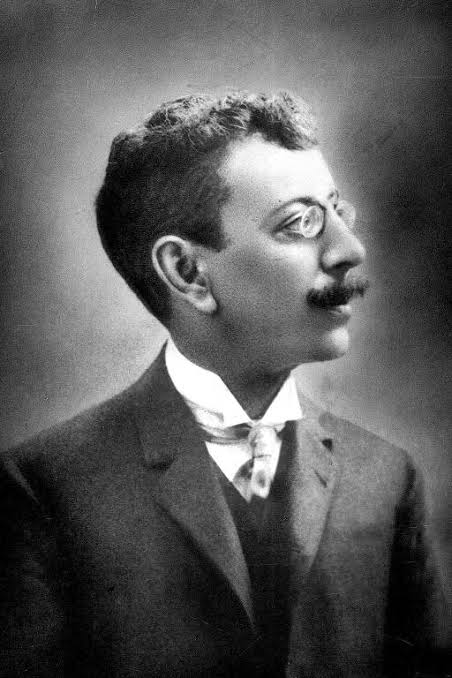

Olavo Bilac
1865 – 1918 • Rio de Janeiro, Brasil
Olavo Bilac foi um dos maiores expoentes do Parnasianismo brasileiro e membro fundador da Academia Brasileira de Letras (ABL). Conhecido como o "Príncipe dos Poetas Brasileiros", destacou-se pelo rigor formal, pelo preciosismo vocabular e pelo culto à estética da "arte pela arte". Além da poesia lírica e descritiva, teve forte atuação na educação cívica e no jornalismo.
Principais Obras
Temas Recorrentes
O amor idealizado, a sensualidade sutil, a natureza, a pátria (civismo), a transitoriedade da vida, o sofrimento humano e, acima de tudo, o próprio processo de criação artística e o trabalho com as palavras.
Características de Escrita
Domínio absoluto da métrica e da rima (especialmente o verso decassílabo e o alexandrino), vocabulário culto e rebuscado, foco na perfeição plástica, uso de metáforas visuais e a famosa comparação do poeta a um ourives que lapida a gema literária com paciência obsessiva.
Influências Artísticas
Inspirou-se profundamente nos poetas parnasianos franceses (como Théophile Gautier e Leconte de Lisle) e na tradição clássica greco-latina e camoniana, fixando os moldes formais que dominaram a poesia brasileira na virada do século XIX para o XX.
"Invejo o ourives quando escrevo: / Imito o amor / Com que ele, em ouro, o alto relevo / Faz de uma flor."